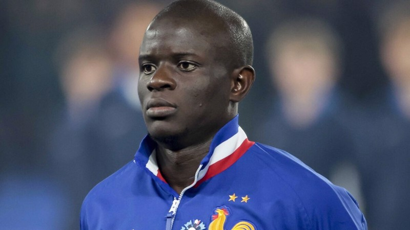
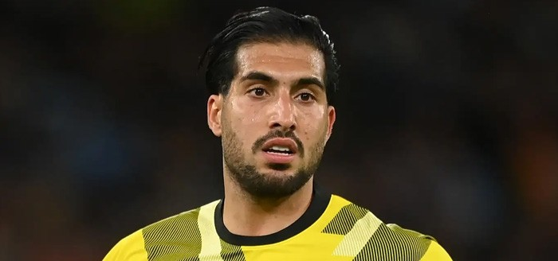
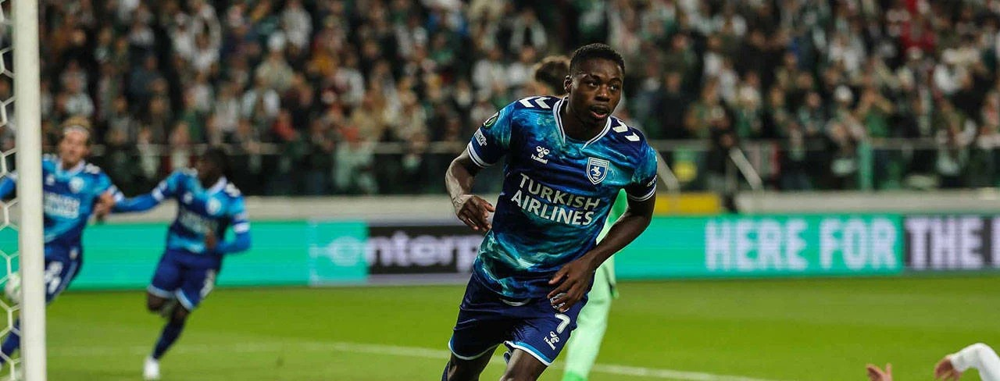
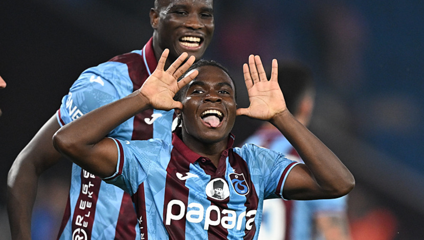
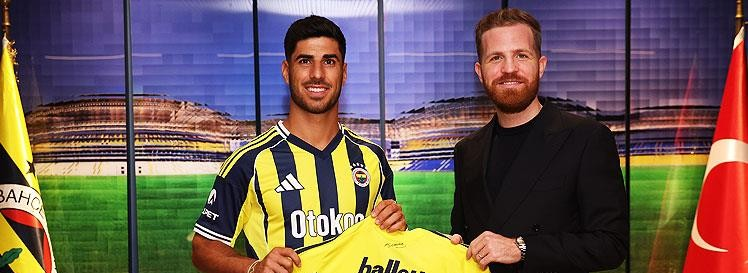
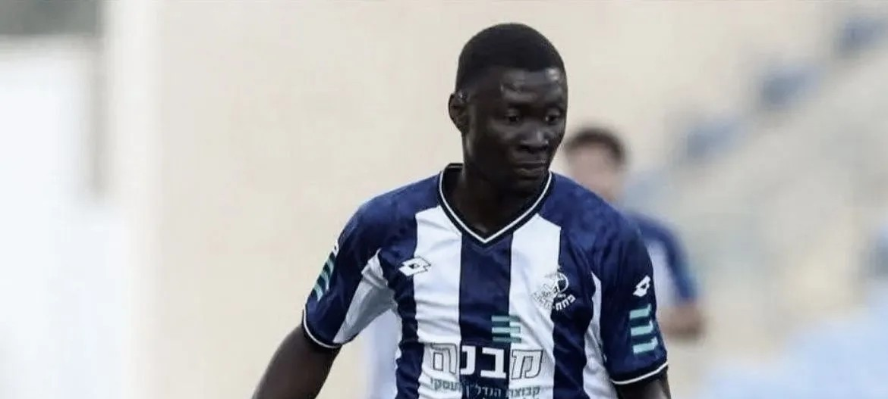

TM Profiline Git ↗
Resmi Transfermarkt® verilerine yönlendirir.
B-SPORT ANA SAYFA
ANA SAYFA
SÜPER LİG
Fikstür
Puan Durumu
AVRUPA KUPALARI
FOTOĞRAF GALERİSİ
İLETİŞİM
TRANSFER HABERLERİ
Kanarya'da Kante Atağı.

Konyaspor'dan Yerli Hücumu!..
Kartal'da Transfer Hareketliliği.

Samsunspor'da Ryan Kent Denemesi...
Galatasaray'da Arias Kovalamacası.
Göztepe'nin Yeni 10 Numarası.
Musaba Sarı-Lacivert Yolunda

Trabzonspor'dan Scout Transferleri.

Fenerbahçe'de Yaz Transfer Gündemi

Orkun Kökçü Çocukluk Aşkında...
Trabzonspor'da İsrail Liginden Ta-Bi.
